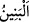

16. Yoksa Allah, yarattıklarından kızları kendisine aldı da oğulları size mi ayırdı?!
Âyetin başındaki “yoksa” mânâsındaki “ /em” edâtı “bilakis” anlamındaki “ /bel”
takdirindedir. “Hemze” ise inkâr, azarlama ve onların hâlinden taaccüb içindir. Burada
“kızlar” anlamındaki “__WORD__/benât” kelimesinin nekre olarak gelmesi, kız çocuklarını
aşağılamaya yöneliktir. Aynı şekilde “oğullar” anlamındaki “__WORD__/benîn” kelimesinin
mârife olarak gelmesi de bir yücelik ve saygı içindir. Müşriklerin, kızları Allah’a nispet
etmelerinin kabul edilemez bir durum olduğunu göstermek için “benât” kelimesi takdim
edilmiştir. Çünkü burada gözetilen maksad ve merkezî mânâ açısından kızlar bahsinin
öne alınması daha önemlidir. Ayrıca bu konuyu arz ettikten sonra Allah Teâlâ, sitem ve
susturma maksadıyla onlara yönelmekte ve yüklenmektedir.
“__WORD__/isfâ”, îsâr yani seçmek, tercih etmek demektir. “__WORD__/asfeytü fülânen”
sözü, “bu hususta onu tercih ettim” demektir. Mânâ şudur: Yoksa Allah Teâlâ, bu iki
sınıfın size göre değersiz olanı kızları aldı da, bunların değerlileri olan oğulları size mi
bıraktı? Hesap ederek düşünün ki, Allah hakkında muhâl ve mümtenî olduğu apaçık iken
evlâd cinsini Allah’a nispet etmeye cüret ettiniz. Sizde bir nebze akıl ve hayâ yok mu ki,
siz iki sınıftan hayırlı ve üstün olanı Allah’ın size bıraktığını, kötü ve bayağı olanı
kendisine ayırdığını iddiâ ettiniz.
Zîrâ kız çocuğu onlarda hiç sevilmezdi. Bunun için onları diri diri toprağa
gömüyorlardı. Bu durumda Allah kızları kendisine ayırıp oğulları kullarına vermiş
olsaydı, kulun hâli Allah’ın şânından daha mükemmel ve üstün olurdu ki, açıkça akıl
bunu kabul etmemekte ve reddetmektedir.
[144]. Deylemî, Hadis no: 4669.
[145]. Müslim, Birr 2564; İbn Mâce, Zühd 4143.
[146]. Ebû Dâvûd, Cihâd 2602; Tirmizî, Deavât 3446; Ahmed b. Hanbel, el-Müsned,
755.
[147]. Kenzu’l-ummâl, 24995; Heysemî, X, 186/17097; Münâvî, V, 480.
[148]. Buhârî, Fedâilu’s-sahâbe12, 16, 29; Müslim, Fedâilu’s-sahâbe 93, 94; Ebû
Dâvûd, Nikâh 12; Tirmizî, Menâkıb 60; İbn Mâce, Nikâh 56.
[149]. Beyhakî, VII, 64, X, 201; Hâkim, III, 158; Müttekî, nr. 34222, 34223; Aclûnî,
II, 130.